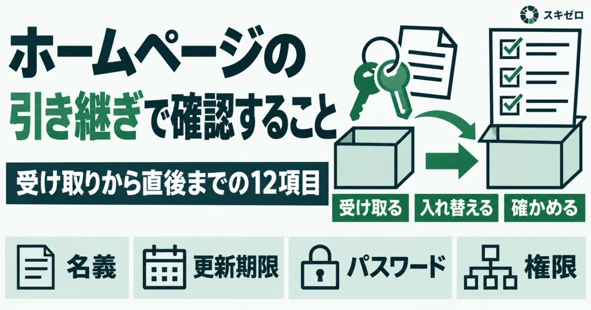
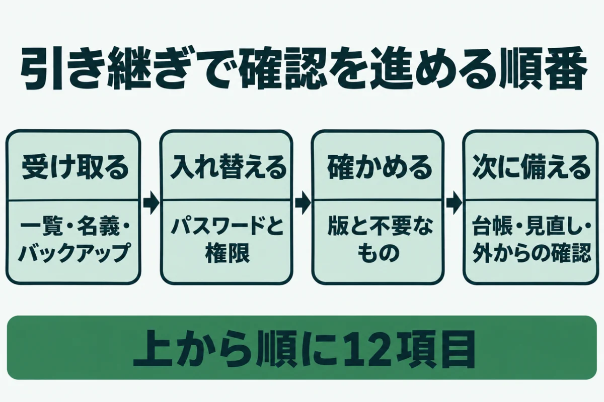
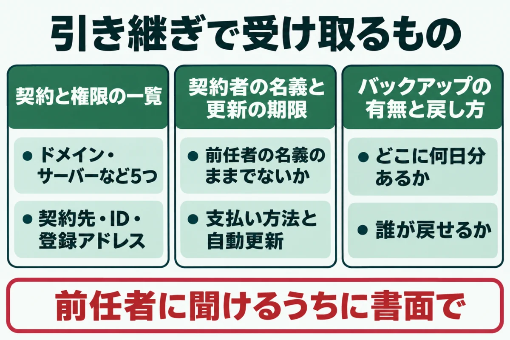
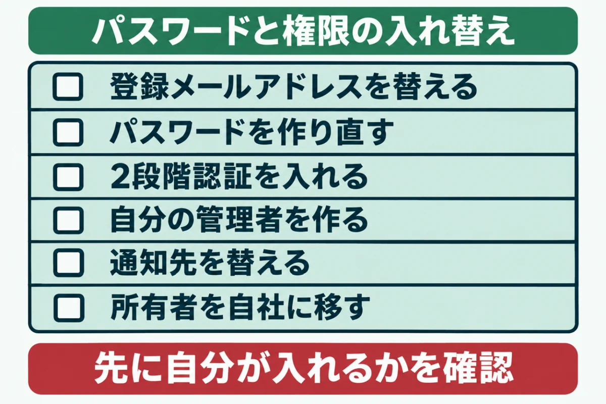
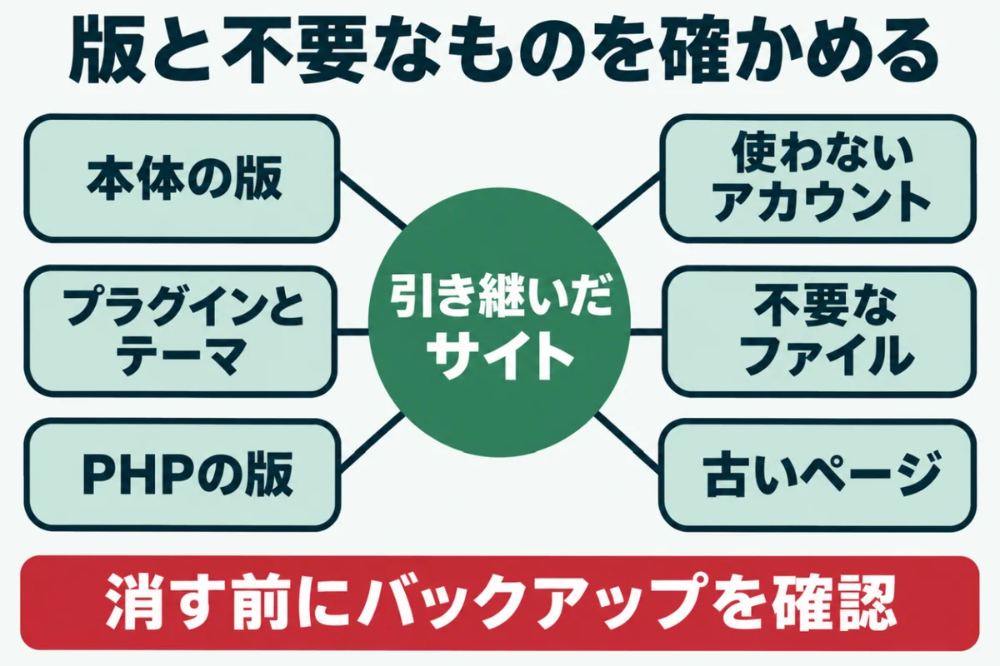
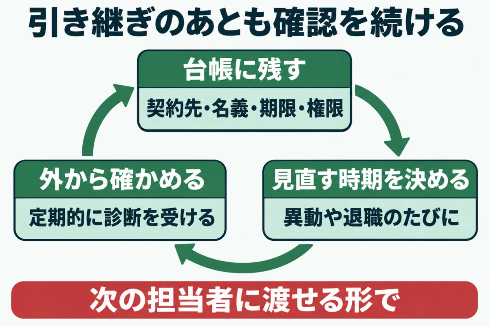

ホームページの引き継ぎで確認したいセキュリティ項目受け取るものと直後に確かめる12項目

前任の担当者や前の制作会社から、ホームページの管理を引き継いだばかりではありませんか？
引き継ぎの直後は、誰がどこに入れるのかが見えにくい時期です。契約の名義や更新の期限が分からないままだと、ある日サイトやメールが止まるおそれもあります。
この記事では、受け取るものと直後に確かめる12項目を、順番つきでまとめました。IPAや総務省の資料、サーバー会社のマニュアルをもとにしています。
画面の名前は、2026年11月時点で確かめたものです。手元に引き継ぎの書類やメールを用意して、読み進めてください。
ホームページの引き継ぎで確認を急ぎたい理由と、進める順番

ホームページの引き継ぎでは、まず誰がどこに入れるのかを確認します。前任者が知っている入口が、そのまま残りやすいからです。
契約の名義や期限も、引き継ぎで抜けやすい情報でしょう。受け取る、入れ替える、確かめる、次に備えるの順で進めると、抜けを減らせます。12項目は公的な分類ではなく、この記事での整理です。
前任者が知っている入口は、そのまま残りやすい
総務省のサイトは、正規のユーザー情報が攻撃者に渡る原因を挙げています。その中に、退職したユーザーのアカウントがあるのです。長く変更されていない共有のアカウントも並びます。担当が替わっても、前任者の知るパスワードは使えるままでしょう。同じサイトは、人員の構成が変わるたびにアクセス権を見直すよう勧めています。IPAのガイドラインも、異動や退職のときは速やかに設定を変えるよう求めました。引き継ぎは、まさにその場面です。
- 参考：アカウント管理｜総務省 国民のためのサイバーセキュリティサイト
- 参考：アクセス制御・管理｜総務省 国民のためのサイバーセキュリティサイト
- 参考：中小企業の情報セキュリティ対策ガイドライン 第4.0版（PDF）｜IPA 独立行政法人 情報処理推進機構
連絡先が古いままだと、大事な知らせが届かない
JPRSによると、ドメインの更新や移転では、登録者に確認の連絡が来ることがあります。連絡先が前任者のアドレスのままだと、受け取れないでしょう。JPRSは、登録者に連絡先の情報を常に最新に保つよう求めています。.comなどを扱うICANNの案内では、連絡先の変更は7日以内に直す決まりです。正確さの問い合わせに15日を超えて答えないと、登録を止められることがあります。期限が切れたあとの流れは、別の記事にまとめました。ドメインの更新忘れで起きること｜期限切れのあとの流れと期限の確認方法です。
受け取る、入れ替える、確かめる、次に備えるの順で進める
最初に、契約と権限の所在を受け取ります。どこに何があるかが分からないと、パスワードも変えられないからです。次に、前任者が知っているパスワードと権限を入れ替えましょう。そのあとで、WordPressの版や不要なアカウントを確かめます。版の更新は、バックアップを確かめてからにしてください。順番を逆にすると、不具合が出たときに戻せません。最後に、台帳と見直しの決まりを作ります。前任者に聞けるうちに、受け取る項目から始めるのが勧めです。
ホームページの引き継ぎで確認する項目（受け取るものの3項目）

ホームページの引き継ぎで最初に確認するのは、契約と権限がどこにあるかです。ドメイン、サーバー、WordPress、メール、Search Consoleの5つを聞き取ります。
あわせて、契約者の名義、更新の期限、バックアップの有無も受け取りましょう。前任者と連絡が取れるうちに済ませたい項目です。口頭で済ませず、書いたものでもらってください。
① 契約と権限の所在を一覧で受け取る
ドメイン、サーバー、WordPress、メール、Search Consoleの5つについて聞きます。聞くのは、契約先の会社、ログインのID、登録したメールアドレスです。誰の名義で契約しているかも、あわせて書いてもらいましょう。JPRSは、部門ごとに別々の管理サービスを使うと全容がつかめなくなると注意しています。ドメインが複数の会社に分かれていないかも確かめてください。制作会社から引き継ぐ場合の確認は、別の記事にまとめました。制作会社に任せたホームページ、保守契約で確認したいこと｜5つの項目と見直しの手順です。
② 契約者の名義と更新の期限を確かめる
契約の画面に入り、契約者の名義と更新の期限を見ます。名義が前任者の個人名や制作会社のままでないかが要点です。エックスサーバーでは、担当者名やメールアドレスは管理画面で変えられます。一方、別の法人や個人への名義の移し替えは、書面の手続きでした。.jpのドメインの申請は、すべて指定事業者を通す決まりになっています。管理している会社が分からないときは、JPRSの窓口が問い合わせ先です。支払い方法と自動更新の設定も、同じ機会に見ておきましょう。
③ バックアップの有無と戻し方を確かめる
バックアップがあるか、どこに何日分あるか、誰が戻せるかを聞きます。総務省のサイトは、トラブルのときに復旧できることが重要だと説明しました。戻す訓練を平時からしておくことも勧めています。エックスサーバーの自動バックアップは、14日分を保つ仕組みです。一部の古いサーバーは7日分だと、マニュアルにあります。運営者の自社サイトでは、Webデータが7日分、データベースが14日分でした。日数は、サーバーパネルで確かめてください。
ホームページの引き継ぎで確認する項目（パスワードと権限の3項目）

ホームページの引き継ぎで一覧を確認したら、パスワードと権限を入れ替えます。前任者を疑うからではなく、入口を自分で管理するためです。
契約の管理画面、WordPress、Search Consoleの順に進めましょう。先に自分が入れることを確かめてから、前任者の分を外します。逆の順番だと、誰も入れなくなるおそれがあるのです。
① サーバーの契約とメールの入口を入れ替える
最初に、契約の管理画面の登録メールアドレスを自分のものに替えます。エックスサーバーでは、パスワードの再設定の案内が登録のアドレスに届くからです。前任者のアドレスのままだと、再設定で戻れることになります。続けて、管理画面、サーバーパネル、FTP、メールのパスワードを作り直してください。2段階認証も、XServerアカウントとサーバーパネルの両方で使えます。ログイン履歴では、直近30件の日時やIPアドレスを見られる仕組みです。覚えのないログインがないかを見ましょう。
② WordPressに自分の管理者を作り、通知先を替える
WordPressでは、自分の名前の管理者アカウントを作ってログインします。IPAのガイドラインも、共有のIDはなるべく使わないよう勧めているからです。前任者のアカウントは、投稿の引き継ぎ先を決めてから整理してください。次に、「設定」の「一般」にある「管理者メールアドレス」を見ます。更新や不具合の知らせが届く先で、ユーザーのアドレスとは別の設定です。公式ドキュメントによると、変更は新しいアドレスに届く確認のリンクを押すまで有効になりません。押し忘れに気をつけましょう。
- 参考：中小企業の情報セキュリティ対策ガイドライン 第4.0版（PDF）｜IPA 独立行政法人 情報処理推進機構
- 参考：Settings General screen｜WordPress.org Documentation
③ Search Consoleの所有者を自社に移す
Search Consoleは、「設定」の「ユーザーと権限」で一覧を見られます。この画面は、プロパティの所有者にだけ表示されるものです。Googleのヘルプによると、プロパティには確認済みの所有者が1人以上要ります。先に自社のアカウントで所有権を確認してください。ヘルプは、サイトを引き継いだ場合の流れも示しています。自分の確認を終えてから、前の所有者の確認用のトークンを消す流れです。トークンが残ると、前の所有者は所有権を取り戻せます。
ホームページの引き継ぎで確認する項目（版と不要なものの3項目）

入口を入れ替えたら、ホームページの引き継ぎで見落としやすい中身を確認します。対象は、プログラムの版と、使われていないものです。
前任者が把握していなかった古い部品が、残っていることもあるでしょう。見つけても、あわててすぐに更新や削除をしないでください。先にバックアップを確かめ、影響を調べてから手を付けます。
① WordPress本体・プラグイン・PHPの版を見る
WordPressの「ツール」にある「サイトヘルス」を開きます。「情報」のタブで、本体の版と、有効・停止中のプラグインの数が分かるでしょう。「ステータス」のタブは、古いPHPや更新待ちのプラグインを知らせます。IPAの20ヶ条も、サイトがどのソフトで作られているかの把握を求めているのです。運営者は、2026年10月に自社のサイト15個を点検しました。そのうち7つは、サポートの終わったPHPのままでした。更新の前に、ファイルとデータベースのバックアップを取ってください。
- 参考：Site Health screen｜WordPress.org Documentation
- 参考：Dashboard Updates screen｜WordPress.org Documentation
- 参考：安全なウェブサイトの運用管理に向けての20ヶ条｜IPA 独立行政法人 情報処理推進機構
② 使われていないアカウントを洗い出す
WordPressの「ユーザー」の一覧を開き、持ち主の分からないアカウントを探します。一覧の上のリンクで、管理者だけにしぼって見られるのです。IPAの自社診断も、開発やテストで使った不要なアカウントの削除を挙げています。運営者の自社サイトの点検では、数年前の外注先の編集者アカウントが2つ残っていました。消す前に、投稿の引き継ぎ先を決めてください。迷うものは、先に権限を下げる方法もあります。FTPとメールのアカウントも、同じ目で見直しましょう。
③ 不要なファイルと古いページを片づける
サーバーの公開フォルダに、使っていないファイルがないかを見ます。移転のときのzip、設定ファイルの写し、試しに作った古いサイトなどです。IPAの20ヶ条は、不要なファイルの削除と、不要なページの閉鎖を求めています。放置したページは、弱点が見つかっても管理が及ばないと説明されました。前任者が何のために置いたかを、聞けるうちに確かめてください。探し方と消し方は、別の記事にまとめています。バックアップファイルを公開フォルダに置く危険｜見つけ方と消し方、安全な置き場所です。
ホームページの引き継ぎで確認する項目（次に備える3項目）

ホームページの引き継ぎで確認した内容は、次の担当者にそのまま渡せる形で残します。自分が受け取るときに困った点は、次の人も困るからです。
残すのは、台帳、見直しの決まり、外からの確かめ方の3つでしょう。一度作っておけば、次の異動や契約の変更があっても慌てずに済みます。作るのは、内容を確認した直後がいちばん楽です。
① 確かめた内容を台帳に残す
契約先、名義、期限、登録のメールアドレス、権限を持つ人を1枚の表にまとめます。IPAのガイドラインは、IDの発行から削除までを管理する手順を定めるよう勧めているのです。退職のときにIDや鍵を回収し、チェックリストで見える形にすることも挙げました。パスワードそのものは、表に書かないでください。パスワード管理の仕組みなど、別の安全な場所に分けて保管します。担当者が1人だけだと、休んだときに誰も動けません。2人以上が場所を知る状態にしましょう。
② 見直す時期と担当を決める
台帳は、作ったあとの見直しが欠かせません。総務省のサイトは、異動や退職で人員が変わるたびにアクセス権を見直すよう勧めています。定期的な棚卸しで、退職者やテスト用の権限が残っていないかも見るのです。JPRSも、WHOISで登録の状態を定期的に確かめる方法を有効としました。ドメイン会社から届く変更の通知を、1か所で見ることも挙げています。年に1回など、時期と担当を決めておきましょう。退職や契約の終了があったら、その都度見直してください。
③ 外から見える状態を定期的に確かめる
引き継いだあとも、サイトの状態は変わり続けます。IPAの20ヶ条は、社内の確認に加えて外部の診断を定期的に受けることを挙げているのです。対策の漏れを洗い出す手段として、効果があると説明しました。自分で確かめる項目は、別の記事に20個まとめています。ホームページのセキュリティチェックリスト｜中小企業が自分で確かめる20項目です。スキゼロの無料簡易診断は、外から見える範囲の8項目を判定します。管理画面やファイルの中までは見ません。
URLを入れるだけで、SSL証明書やPHPの版など8項目を無料で判定します。無料簡易診断が見るのは、外から見える範囲だけです。引き継いだサイトをより詳しく調べたいときは、詳細診断（29,800円・税込）をご利用ください。
無料で診断するホームページの引き継ぎの確認に関するよくある質問
前任者と連絡が取れないときは、どこから確認すればよいですか？
まず、請求書や更新の案内のメールから、契約先の会社を割り出します。契約が自社の名義なら、サーバー会社やドメイン会社に相談できるでしょう。エックスサーバーでは、パスワードの再設定の案内が登録のメールアドレスに届きます。そのアドレスを会社で受け取れるかが分かれ目です。.jpのドメインで管理している会社が分からないときは、JPRSの窓口に問い合わせてください。登録者か連絡の担当者だと確認できた場合に、教えてもらえます。
前任者から教わったパスワードは、そのまま使ってもよいですか？
そのまま使い続けるのは勧めません。前任者が覚えているうえ、メモやメールに残っていることもあるからです。IPAのガイドラインは、初期設定のパスワードを変えるよう挙げています。10文字以上で、できるだけ長く複雑にすることも勧めました。同じパスワードを、複数のサービスで使い回さないでください。使える場合は、2段階認証などの認証を強める機能も足しましょう。
会社の名義の契約でも、担当者が替わったら手続きが要りますか？
会社の名義のままなら、契約そのものを移す手続きは要りません。ただし、担当者の名前や連絡先は新しくしてください。エックスサーバーでは、担当者名、住所、電話番号、メールアドレスを管理画面で変えられます。古い連絡先のままだと、更新や確認の知らせを受け取れないでしょう。前任者の個人の名義で契約していた場合は、別の手続きです。書面での申し込みになるので、早めにサーバー会社へ相談しましょう。
Search Consoleが前任者の個人のGoogleアカウントだったら、どうしますか？
自社で管理するGoogleアカウントを用意し、所有者に加えます。前任者に頼めるなら、ユーザーの管理の画面から所有者として追加してもらいましょう。頼めないときは、自分で所有権の確認をやり直す方法があります。Googleのヘルプによると、確認済みの所有者はサイトに置いたトークンで決まるからです。自社が所有者になったら、前任者の権限を外してください。前任者の確認用のファイルやタグも、サイトから消しておきます。
WordPressではないホームページでも、同じ項目を確認しますか？
契約、名義、期限、バックアップ、パスワードの確認は、仕組みを問わず同じです。違うのは、版の確かめ方でしょう。WordPressのサイトヘルスにあたる画面は、ほかの仕組みにはないことがあります。IPAの20ヶ条は、サイトがどのソフトで作られているかを把握するよう求めました。使っている仕組みと版を、前任者か制作会社に聞いてください。作った会社にしか直せない部分があるかも、あわせて確かめましょう。
まとめ
ホームページの引き継ぎは、誰がどこに入れるのかを整理し直す機会です。前任者に聞けるうちに、契約と権限の一覧、名義と期限、バックアップを受け取りましょう。
そのうえで、パスワードと権限を入れ替え、版と不要なものを確かめます。最後に台帳と見直しの決まりを作れば、次の引き継ぎも楽になるでしょう。12項目を、上から順に進めてください。
まずは、今の状態を知るところから。
URLを入れるだけで、数十秒で判定が出ます。登録はいりません。